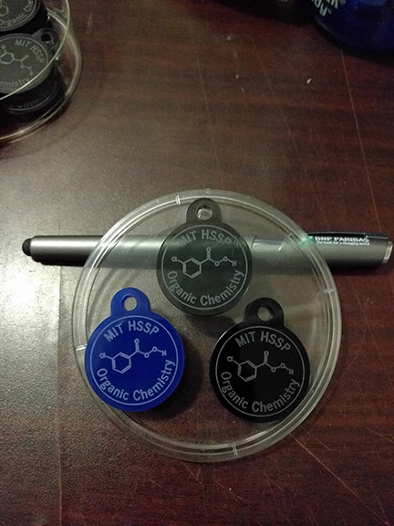
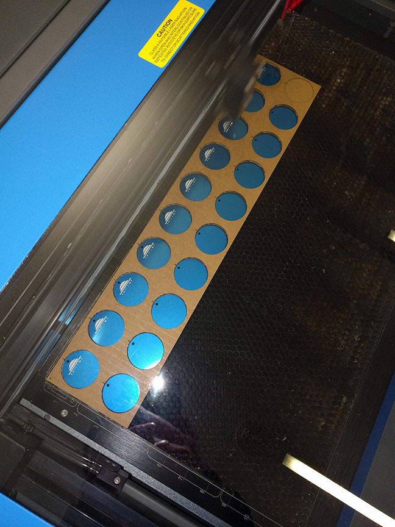
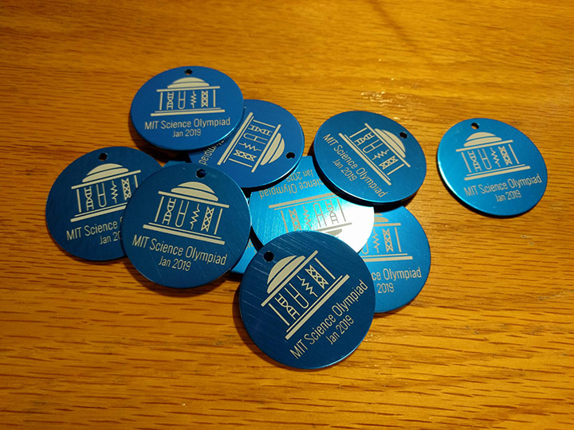

Laser cutting has become an extremely popular way to produce custom gifts that look nice with relative ease. One of my favorite applications of this that I have used in several different events I've helped run at MIT are laser-cut keychains.
My first use of laser-cut keychains was for a summer organic chemistry class I was teaching through MIT's Educational Studies Program. The course was fairly rigorous, so I thought it might be nice to reward the students who had stuck through the class to the end with a keychain as a souvenir. On the last day, I cut a few tokens out of 1/8" and 3/8" thick acrylic.
In my opinion, the transparent acrylic produced a fairly elegant result, especially with the thicker 3/8" stock.
Pure aluminum metal is highly reactive. When exposed to air, it reacts rapidly to form a layer of aluminum oxide. The aluminum oxide is very hard and forms a protective ("passivating") coating on the surface which prevents further oxidation of the metal underneath.
The process of anodization seeks to further grow and thicken this oxide layer, which enhances its protective properties. A side-effect of this anodization process is that the oxide is very porous. This now-porous surface of the aluminum can be filled with a dye to give it a very vivid color. When the metal is heated again, these pores seal themselves and trap the dye in the metal. The dye can now no longer be removed without physically scraping off the oxide layer. With a laser, we can ablate the dye particles fairly precisely. This exposes the bare metal underneath which is a metallic silver. Thus we can use the laser to mark dyed, anodized aluminum.
To start, I purchased some standard blank anodized aluminum tags online. These come in a variety of colors. I used blue circular keychain tags with a diameter of 1-1/4". On a Universal VLS3.50, 50W CO2 laser, I found that 65% power, 100% speed, and 500 ppm frequency produced fantastic results with good contrast. One problem I encountered on earlier runs was that the resulting mark was a dull white. This was solved by turning up the power. Higher power created whiter marks and better contrast.
One of the issues involved in engraving circular keychains is that the image needs to be well centered on the tag because non-concentricity is extremely easy to detect by eye. To fix this, I cut out a cardboard template that could position the metal tag at precisely the correct location. This was done in a couple steps to ensure accuracy:
The following are some keychains that were cut for the MIT Science Olympiad tournament as thank-you gifts.
 There are commercial products available for marking metals beyond anodized aluminum. The most common product for this is CerMark which is a compound designed for use with CO2 lasers. The product appears to work quite well from online reviews and videos, but the main issue is that it is extremely expense. One can of the spray costs about $60.
The DIY alternative to CerMark is Dry Moly Lube which costs about $10 for 450g. As the name suggests, Dry Moly Lube is a lubricant consisting of molybdenum disulfide carried by some solvents. From my best guess, it appears that the laser will sinter the molybdenum together to create a mark on the surface. I have not personally tried the method before, so take this with a grain of salt, but I have seen it work with varying degrees of success depending on the metal and the procedure. There are some useful link from a Sawmill Creek forum and the Evil Mad Scientist. There are also a handful of YouTube videos showing the process and people conducting more thorough tests. The method seems promising and is definitely something I want to try out.
{kind=link}
{kind=link}
{kind=link}